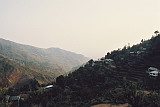

25/10/2000
You are here: Home > Travelogues > India 2000 > 25/10/2000More Miscellaneous Ramblings from the Teeming Subcontinent
Just another quick update. For those that didn't get Jana's email, we're in a place called Dharamsala now, which is where the Dalai Lama lives, along with the Tibetan Govt in Exile. It's really lovely, nice big mountains (well almost mountains, hills really, but we'd call them mountains in Australia). Clean air too, which is nice after Delhi (which can be compared to Sydney at the height of the big bushfires a few years ago, only it ain't wood smoke).
Haven't been doing all that much, the place is just a lovely spot to relax and read a bit in the sun and so on. The place where we're staying is really nice, only slight drawback are the 228 stairs to get into town. But it's good exercise...
There was a children's festival on today at the Tibetan school, which we went along to have a look at, as the Dalai Lama as speaking, which he did, unfortunately for us we don't speak Tibetan so we have no idea what he actually said. I'm sure it was nice though. :) I've actually just finished reading his autobiography - he's quite a remarkable and wise man (not that this came as a surprise).
Apart from that not much news. We'll probably leave here tomorrow, and head back to Delhi (yay) for a day, then on to Varanasi (which is the place with all the steps on the river, known as 'Ghats'). After that Agra and the Taj Mahal.
So yah, another 13 hour bus trip out of here. You'll be able to use the words 'bus plunge' again safely soon. :)
Some other random memories:
- Some traffic lights in Delhi have 'relax' painted on the red light
- A sign on the side of the twisty mountain road on the way up here - "Risk takers are accident makers" (this isn't aimed at anyone in partiular of course, you're all bloody dangerous drivers!)
- The cows are often amusing. We were watching the little alley behind our place in Delhi, where there are numerous stalls selling various vegies and so on... the cows wander around, totally unfazed by the chaos around them. One went up to a pile of cauliflowers and had a good lick and nuzzle, causing one to fall off... The owner of the stall waited a few minutes (after giving the cow the 'movealong') and then dusted off the veg and popped it back on the pile. Good as new. I'd say it's reasonably unlikely to get sick here, provided one is a little careful, but incidents like are pretty random, and you never know. Still once cooked it doesn't really matter about cow slobber I guess. :)
Anyway enough ramble for now... enjoy your disinfected sponges, air conditioned offices and antibacterial ways of life... ;)
All images in this gallery:
F1000010.JPG 106.04 KB |
F1000011.JPG 107.14 KB |
F1000013.JPG 130.04 KB |
F1000014.JPG 125.17 KB |
 F1000015.JPG 49.17 KB |
F1000016.JPG 55.27 KB |
 F1000017.JPG 78.71 KB |
F1000018.JPG 70.35 KB |
F1000020.JPG 111.94 KB |
{kind=link}
{kind=link}
{kind=link}
{kind=link}
{kind=link}
{kind=link}
{kind=link}
{kind=link}
{kind=link}